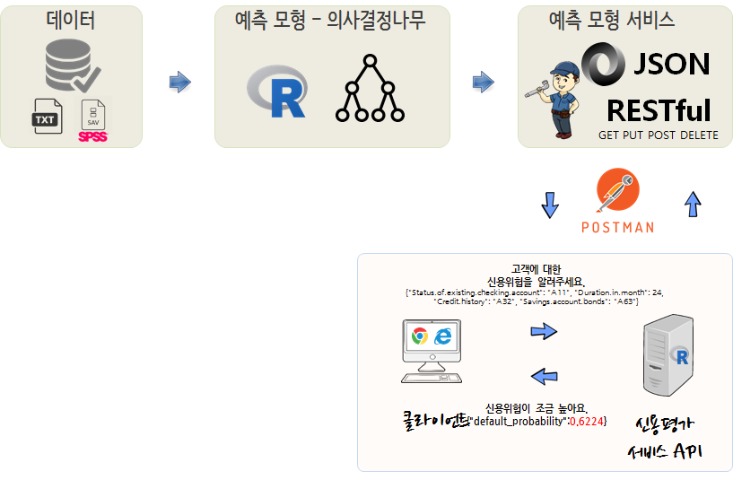
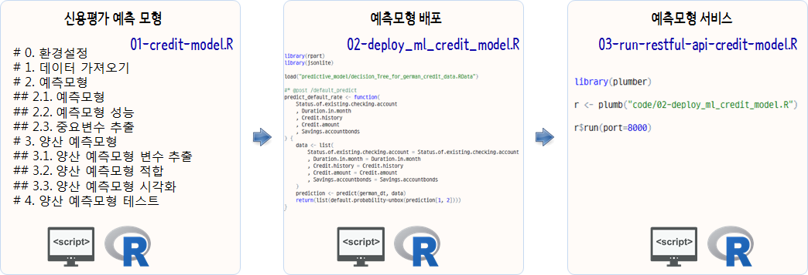
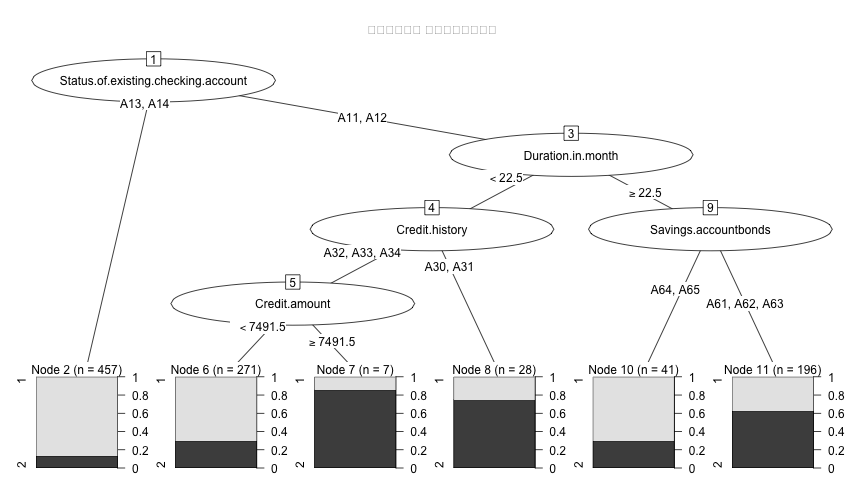
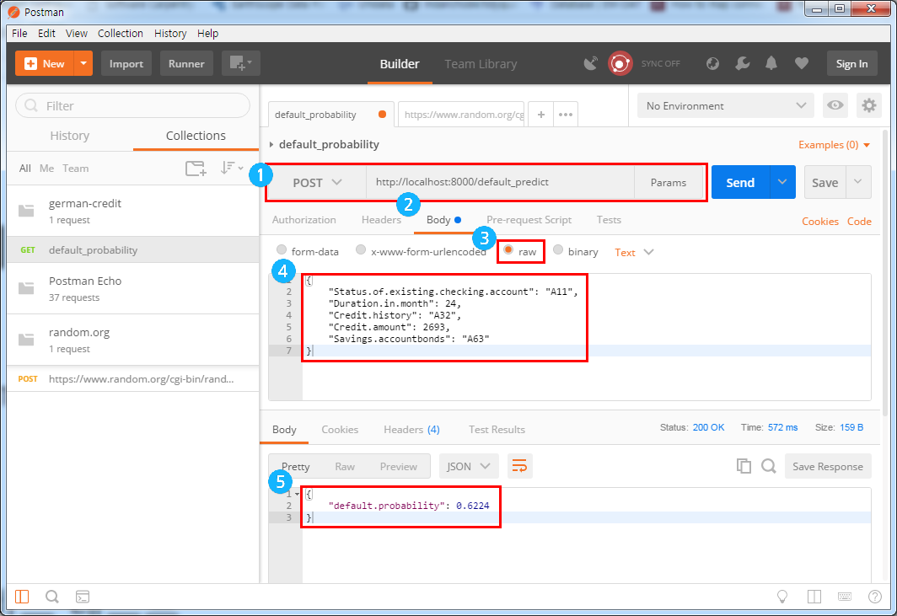

R 병렬 프로그래밍
신용위험 확률(plumber) API
1. 신용위험 API 1 2
훌륭한 신용위험 모형을 개발하는 것도 중요하지만, 다소 성능이 떨어지더라도 실용적으로 활용될 수 있도록 RESTful API로 예측모형 결과를 배포하는 것도 필요하다. 이런 목적으로 다양한 R 팩키지가 개발되어 지원되고 있다.
그중 배관공(Plumber)를 활용하여 신용위험을 알려주는 API를 개발해보자.

2. 신용평가 모형 개발
가장 먼저 신용평가모형 개발에 오래전부터 예제 데이터로 사용된 독일신용데이터를 신용평가모형 데이터를 활용한다.
3단계로 걸쳐 신용평가 예측모형 서비스를 준비한다.
- 신용평가 예측모형 개발:
01-credit-model.R - 개발된 신용평가 예측모형 배포:
02-deploy_ml_credit_model.R - 신용평가 예측 서비스 제공:
03-run-restful-api-credit-model.R

신용부도 이력을 갖는 데이터(german credit)를 가지고 신용평가모형을 개발한다. randomForest 팩키지 확률숲(Random Forest) 모형을 기본으로 중요성이 있는 변수 5개를 뽑아내서 예측모형 아케텍쳐로 의사결정나무(rpart) 모형을 활용하는 신용평가 예측모형을 개발한다. 개발과정에서 준비된 신용평가모형이 정상적으로 동작하는지를 predict 함수에 신용위험을 평가할 고객 한명 데이터를 준비해서 테스트한다.
- Status.of.existing.checking.account=‘A11’
- Duration.in.month=20
- Credit.history=‘A32’
- Credit.amount = 2969
- Savings.accountbonds=‘A65’
개발된 신용평가 예측모형을 RESTful API 함수 형태로 개발하여 배포하는 형태로 변형시키고 배포한다.
# 0. 환경설정 ----------------
# library(tidyverse)
# library(rpart)
# library(randomForest)
# library(rpart.plot)
# library(rpart)
# library(party)
# library(partykit)
# 1. 데이터 가져오기 ----------------
url <- "https://archive.ics.uci.edu/ml/machine-learning-databases/statlog/german/german.data"
col_names <- c(
'Status.of.existing.checking.account','Duration.in.month','Credit.history'
,'Purpose','Credit.amount','Savings.accountbonds'
,'Employment.years','Installment.rate.in.percentage.of.disposable.income'
,'Personal.status.and.sex','Other.debtorsguarantors','Present.residence.since'
,'Property','Age.in.years','Other.installment.plans','Housing','Number.of.existing.credits.at.this.bank'
,'Job','Number.of.people.being.liable.to.provide.maintenance.for','Telephone','Foreign.worker','Status'
)
german_df <- read_delim(url, col_names = FALSE, delim=' ')
names(german_df) <- col_names
german_df <- german_df %>% mutate_if(is.character, as.factor) %>%
mutate(Status = factor(Status)) # randomForest 자료형 맞춰주는 작업
# 2. 예측모형 ----------------
## 2.1. 예측모형
german_formula <- as.formula(paste("Status", paste(setdiff(names(german_df), "Status"), collapse="+"), sep="~"))
german_rf <- randomForest(german_formula, data=german_df, importance=TRUE)
## 2.2. 예측모형 성능
german_rf
Call:
randomForest(formula = german_formula, data = german_df, importance = TRUE)
Type of random forest: classification
Number of trees: 500
No. of variables tried at each split: 4
OOB estimate of error rate: 24%
Confusion matrix:
1 2 class.error
1 639 61 0.08714286
2 179 121 0.59666667
## 2.3. 중요변수 추출
german_imp <- importance(german_rf)
german_imp_rowname <- rownames(german_imp) %>% as_data_frame()
german_imp_df <- as_data_frame(german_imp) %>%
bind_cols(german_imp_rowname) %>%
select(names = value, everything())
# 3. 양산 예측모형 ----------------
## 3.1. 양산 예측모형 변수 추출 ------
german_var <- german_imp_df %>% top_n(MeanDecreaseAccuracy, n=5) %>%
pull(names)
german_prod_formula <- as.formula(paste("Status", paste(german_var, collapse="+"), sep="~"))
## 3.2. 양산 예측모형 적합 ------
german_dt <- rpart(german_prod_formula, method="class", data=german_df)
## 3.3. 양산 예측모형 시각화 ------
plot(as.party(german_dt), tnex = 2,
ep_args = list(justmin = 1, just = "decreasing"),
main="신용평가모형 의사결정예측모형")
# 4. 양산 예측모형 테스트 ------
test_data <- list(
Status.of.existing.checking.account='A11',
Duration.in.month=20,
Credit.history='A32',
Credit.amount = 2969,
Savings.accountbonds='A65')
predict(german_dt, test_data) 1 2
1 0.7084871 0.2915129
save(german_dt, file='predictive_model/decision_Tree_for_german_credit_data.RData')Error in gzfile(file, "wb"): 커넥션을 열 수 없습니다
3. 신용위험 서버 API
클라이언드 특정 고객에 대한 신용평가모형 결과를 서버쪽에서 제공하기 위한 API 코드는 다음과 같다.
즉, 예측모형 개발과 동일한 환경을 .Rdata에 담아 불러오고 나서, predict_default_rate 함수를 @post /default_predict 서비스로 노출시킨다.
library(jsonlite)
load("predictive_model/decision_Tree_for_german_credit_data.RData")
#* @post /default_predict
predict_default_rate <- function(
Status.of.existing.checking.account
, Duration.in.month
, Credit.history
, Credit.amount
, Savings.accountbonds
) {
data <- list(
Status.of.existing.checking.account = Status.of.existing.checking.account
, Duration.in.month = Duration.in.month
, Credit.history = Credit.history
, Credit.amount = Credit.amount
, Savings.accountbonds = Savings.accountbonds
)
prediction <- predict(german_dt, data)
return(list(default.probability=unbox(prediction[1, 2])))
}4. 신용위험 서비스 제공
서버에 환경을 구축하고 나서 r$run(port=8000)를 실행하게 되면 신용위험평가 결과를 제공하는 서비스에 대한 준비가 완료된다.
library(plumber)
r <- plumb("code/02-deploy_ml_credit_model.R")
r$run(port=8000)
Starting server to listen on port 8000
Running the swagger UI at http://127.0.0.1:8000/__swagger__/
5. 신용위험 알리미 서비스
신용위험을 예측하는 서비스가 준비되어서 서비스로 제공되고 있다. 이에, 직접 서비스를 호출하여 결과를 받아보자. JSON 형태 데이터를 전달하면 /default_predict 인터페이스를 통해 신용위험 예측 서비스를 제공하는 서버가 이를 받아들어 개발된 예측모형에서 미리 산출된 로직을 통해 신용위험을 평가하여 확률값을 계산하여 이를 전달한다. curl을 활용하여 신용위험 알리미 서비스를 활용할 수도 있다.
$ curl -X POST \
-d '{"Status.of.existing.checking.account": "A11", "Duration.in.month": 24, "
"Credit.amount" = 2969, "Credit.history": "A32", "Savings.account.bonds": "A63"}' \
-H 'Content-Type: application/json' \
localhost:8000/default_predict
{"default_probability":0.6224}터미널을 통해 일일이 타이핑하는 것이 불편해 하시는 많은 분들을 위해서 다양한 RESTful API 테스트 제품 및 서비스가 존재한다. POSTMAN을 설치하여 좀더 신속하고 편리하게 예측모형 RESTful API 제공되는 서비스를 검정할 수도 있다.
